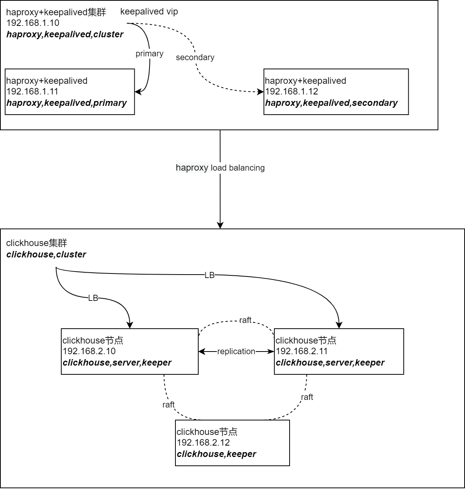

服务端架构

clickhouse最简化的高可用架构是3节点1分片2副本。
其中2个节点是数据节点。
类似于双主，任一一个节点故障，另一个节点依然可以写入，并且有完整的数据提供查询。同时
双节点可以均摊查询负载。
3个节点都包含keeper，实现协调节点的高可用，并且避免脑裂问题。
使用的时候，也不需要同时创建分布式表和本地表支持分布式查询。
配置示例
<clickhouse>
<remote_servers>
<cluster_1S_2R>
<shard>
<replica>
<host>chnode1.domain.com</host>
<port>9000</port>
<user>default</user>
<password>ClickHouse123!</password>
</replica>
<replica>
<host>chnode2.domain.com</host>
<port>9000</port>
<user>default</user>
<password>ClickHouse123!</password>
</replica>
</shard>
</cluster_1S_2R>
</remote_servers>
</clickhouse>
<keeper_server>
<tcp_port>9181</tcp_port>
<server_id>1</server_id>
<log_storage_path>/var/lib/clickhouse/coordination/log</log_storage_path>
<snapshot_storage_path>/var/lib/clickhouse/coordination/snapshots</snapshot_storage_path>
<coordination_settings>
<operation_timeout_ms>10000</operation_timeout_ms>
<session_timeout_ms>30000</session_timeout_ms>
<raft_logs_level>warning</raft_logs_level>
</coordination_settings>
<raft_configuration>
<server>
<id>1</id>
<hostname>chnode1.domain.com</hostname>
<port>9234</port>
</server>
<server>
<id>2</id>
<hostname>chnode2.domain.com</hostname>
<port>9234</port>
</server>
<server>
<id>3</id>
<hostname>chnode3.domain.com</hostname>
<port>9234</port>
</server>
</raft_configuration>
</keeper_server>
<zookeeper>
<node>
<host>chnode1.domain.com</host>
<port>9181</port>
</node>
<node>
<host>chnode2.domain.com</host>
<port>9181</port>
</node>
<node>
<host>chnode3.domain.com</host>
<port>9181</port>
</node>
</zookeeper>
查看集群信息
-- 查看集群信息
select * from system.clusters;
-- 查看表副本信息
select * from system.replicas;
-- 查看节点宏信息
select * from system.macros;